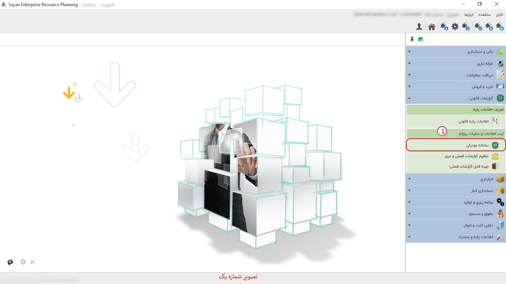

سامانه مودیان، ابزار الکترونیکی پیشرفتهای است که به منظور سادهسازی و بهینهسازی فرآیندهای مالیاتی طراحی شده است. این سامانه مودیان این امکان را به شما میدهد که اطلاعات مالیاتی خود را ثبت و مدیریت نمایید.
برای ادامه مطلب به عکس شماره دوم مراجعه نمایید.

-کادر شماره یک : در این بخش، شما میتوانید نوع صورتحساب مورد نیاز خود را با توجه به فاکتور اصلی تان انتخاب نمایید.
برای ادامه مطلب به عکس شماره سوم مراجعه نمایید.

-کادر شماره یک :
کادر شماره دو :
کادر شماره سوم :
-صورت الحساب الکترونیکی نوع اول (کادر شماره چهارم ):در این نوع صورتحساب، اطلاعات کامل خریدار و فروشنده ثبت میگردد. این اطلاعات شامل نوع فروش، نوع خریدار، تاریخ و زمان صورتحساب، اطلاعات هویتی خریدار و فروشنده، و مشخصات کامل خدمت میباشد.
-نکته :با توجه به اینکه در این نوع از صورتحسابهای الکترونیکی، صدور و ثبت مودیان از طریق سامانه مودیان اعتبارسنجی و پذیرش میشود، این اطلاعات بر اساس شماره اقتصادی در کارپوشه خریدار درج میگردد. در صورت تایید خریدار، این صورتحساب به عنوان اعتبار مالیاتی برای او محسوب خواهد شد.